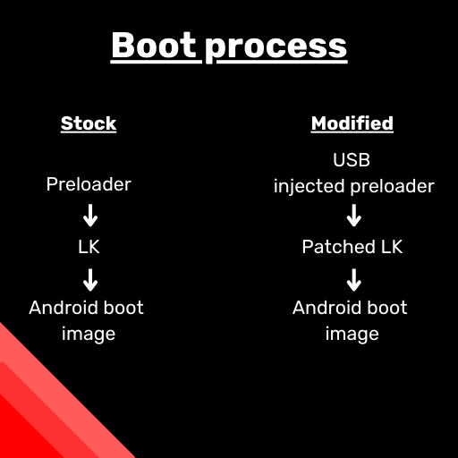

> Rooting the Amazon Echo Dot
> Rooting the Amazon Echo Dot
Daniel B Jul 19, 2023

A new method to gain a tethered root shell on the Echo Dot 2nd generation by patching the Little Kernel.
Rooting involves obtaining the highest level of permissions on a computer system. There has always been a large community of Android users looking to root their devices, whether it is for performance, privacy, compatibility or other reasons. Since the Amazon Echo is also based on Android, it makes sense that people would also be looking for a way to root it. In my previous post, I described pulling Wi-Fi passwords from Amazon Echos using an exploit known as amonet. Thanks to a debug feature implemented by Lab126 (Amazon’s hardware development company) it is now possible to obtain a tethered root on the device. Thanks to strong security practices enforced by the company such as a chain of trust from the beginning of the boot process, this should not be a major issue. However, it is a great opportunity for people wanting to run their own software on the device (such as open source voice assistants). I have provided a CLI and two examples in my code here: one is a web server and client which records and uploads microphone data from the device, and one which acts as a notification indicator for Home Assistant.
How did we get here?
As I described previously, the amonet exploit can be used to read from and write to the internal eMMC storage. This allows the firmware and OS to be dumped and analysed. After I discovered this, I came across a very helpful user called j10hx40r on XDA developers who had already managed to root the echo by patching the little kernel. This was accomplished by changing a value which is passed to a function checking if the device has an unlocked bootloader. This, in turn, allows us to use the fastboot function “fos_flags” (fos referring to FireOS) to enable features such as ADB as root or disabling DM-verity which verifies if the system partition has been tampered with, and selinux which manages permissions. However, after modifying the little kernel, we will find that the device no longer boots, as the chain of trust is broken.

What is a chain of trust?
The recent amazon echo devices running fireOS 5 and 6 (based on Android 5 and 7.2 respectively) employ a chain of trust to verify the integrity of booted software. When the device boots, it verifies that the preloader, a form of bootloader, is signed with Amazon’s signing keys which are burned into the processor’s eFuses. The preloader then verifies that the next step of the boot process, the little kernel, is signed, which then checks the android boot image. In order to root the device, we need to break the chain. Luckily for us, the kamakiri bootrom exploit allows us to bypass the signature, checking for the preloader bricking the preloader, so that the device is temporarily unable to boot. This puts the processor into bootrom mode, allowing us to push a payload to the memory that loads a patched preloader that doesn’t verify that the little kernel is signed with the correct keys. However, this means it is a tethered exploit, as we are required to push the patched preloader by USB.
How do we get root?
Once we have booted a patched little kernel, we can access Amazon’s debug features, including fos_flags. We can use fastboot to access these, just like previous root solutions for the Fire TV stick, as seen below. We can enter fastboot mode by holding the Uber (circle) button upon boot.
These commands are not available when not on an engineering device, however, some flags persist after restoring the device.
Security practices
Once I had a root shell, I began to explore the device, and I was pleasantly surprised by what I saw. For a device which initially cost £35/$46, there seemed to be several measures built into the device to prevent misuse. To start with, the LED underneath the mute button cannot be disabled using software; it is controlled by the OS, but can only be enabled from a root shell and not disabled. This means that if an attacker were to remotely access your Echo, they would be unable to listen in, provided it is on mute. There is also a process which filters logs before they are uploaded to ensure there is no sensitive information; this is a huge improvement from older Kindle devices which were known to upload exact GPS location and is much more privacy-friendly. Processes use a tool called LIPC to communicate just like the linux-based kindles of 15 years ago. LIPC appears to be a dbus-based system which allows inter-process interaction, and it appears that this is being slowly replaced with a seemingly identical version called aceipc.
Conclusion – Is this Dangerous?
I have added a script into the code repository which allows somebody to run a web server and covertly receive recorded audio over the internet using a bash script, with the LED ring appearing to be enabled to be in the mute state. If this exploit were untethered, that could be a relatively significant issue, but thanks to the good practices of Lab126 during the design process, this would not be possible to start on boot. For most customers, the existence of this rooting solution should not be a big issue. It would take considerable technical knowledge and physical access for a moderate period of time for an attacker to be able to carry out this attack. Using a cable like this prevents the need for a computer once the device is booted, but the attack is still very impractical. However, this does present some excellent opportunities for anybody looking to liberate their devices and explore custom software. I have added an example to make the Echo into a smart LED-indicator on the code repository linked at the top of this post, and I’m sure the community will create more with this in the future. With the low cost of older Echo speakers on the second hand market, I can see it becoming a useful little device with several community projects. I feel that it is safe to release the code for my exploration, as according to Amazon’s customer support page here, the 2nd generation Echo Dot no longer receives security updates, and is not in scope for their bug bounty program.
{kind=link}